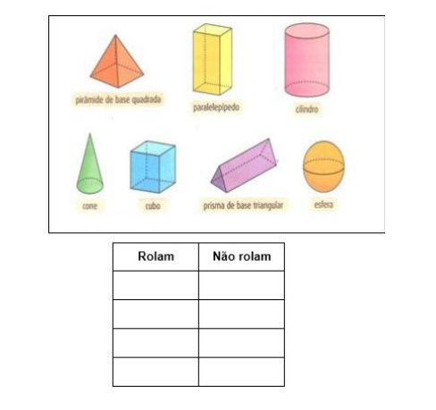
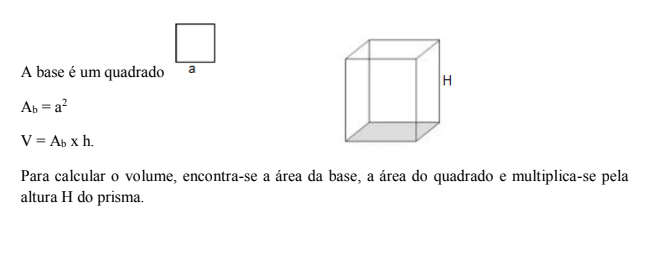

Capítulo 5
A GEOMETRIA NO CONTEXTO DAS INDÚSTRIAS ALIMENTÍCIA E DA CONSTRUÇÃO CIVIL
CONTEXTUALIZANDONa indústria de modo geral, podemos observar vários tipos de aplicações da geometria. Uma aplicação é a criação de embalagens. Para a indústria alimentícia, em particular, são fabricados variados tipos e formatos de embalagens para acondicionar alimentos. O conhecimento dos sólidos geométricos e da forma de cálculo de área e volume é útil para determinar, por exemplo, a quantidade de plástico necessária para preencher qualquer molde. Se calculada com precisão, a quantidade de plástico necessária para fazer certa peça, pode-se encher o molde completamente, sem sobras e manter o custo de produção o mais baixo possível.
Os conhecimentos de geometria são fundamentais, auxiliando na produção de embalagens mais adequadas para cada tipo de alimento, seu devido acondicionamento, e transporte.
 Na indústria da construção civil tanto o estudo
da geometria espacial no que diz respeito ao
conhecimento e cálculo de volume dos sólidos, como o estudo da geometria plana são
fundamentais. Se observarmos, por
exemplo, as imagens de cidades,
vamos verificar a presença constante
de prismas. Se observarmos as
imagens de pontes, viadutos,
passarelas, certamente
constataremos, na sua estrutura, a
presença de formas triangulares.
Assim, os conhecimentos de
diferentes figuras e formas
geométricas e suas propriedades, as diferentes formas de cálculo de área e volume, por
exemplo, são fundamentais nos processos industriais.
Na indústria da construção civil tanto o estudo
da geometria espacial no que diz respeito ao
conhecimento e cálculo de volume dos sólidos, como o estudo da geometria plana são
fundamentais. Se observarmos, por
exemplo, as imagens de cidades,
vamos verificar a presença constante
de prismas. Se observarmos as
imagens de pontes, viadutos,
passarelas, certamente
constataremos, na sua estrutura, a
presença de formas triangulares.
Assim, os conhecimentos de
diferentes figuras e formas
geométricas e suas propriedades, as diferentes formas de cálculo de área e volume, por
exemplo, são fundamentais nos processos industriais.
Caro aluno! Ao longo deste capítulo, vamos estudar algumas figuras e as formas, suas propriedades, retomar o cálculo de área e ampliar o cálculo de volume para compreender a importância desses conhecimentos nos processos industriais, particularmente, das indústrias alimentícia e da construção civil.
AS FIGURAS E AS FORMAS
Faça as atividades propostas para reconhecer e diferenciar as formas planas das espaciais, reconhecer os sólidos de revolução e os poliedros.
1) No quadro a seguir, classifique as figuras, escrevendo no traço abaixo de cada uma se ela é plana ou espacial:

2) Nas imagens a seguir, você tem formas planas e não planas.

Observe um quadro de formas não-planas e classifique-as considerando as que rolam e as que não rolam, escrevendo seus nomes na coluna adequada.
Os sólidos que rolam como o cilindro, o cone e a esfera, são chamados sólidos de revolução e os que não rolam como o cubo, o paralelepípedo, as pirâmides, os prismas são chamados de poliedros.
Uma caixinha na forma de um prisma, por exemplo, a embalagem de uma caixa de bombons, como tantas que há no mercado, é um poliedro. Pegue uma caixinha e explore-a com o tato e você vai perceber que ela tem faces, arestas e vértices. As arestas são como quinas e são representadas por segmentos de reta, os vértices são representados por pontos e são a intersecção de três arestas e as faces dos poliedros que são partes de planos, são os polígonos. Assim, os quadrados, os retângulos, os triângulos, entre outros, são figuras geométricas planas denominadas polígonos.
Acesse o vídeo clicando no link a seguir:

AS PROPRIEDADES E A PLANIFICAÇÃO DOS PRISMAS
Observe o conjunto de sólidos geométricos, verificando as semelhanças e diferenças entre eles.
RELEMBRANDO CONCEITOS
Na geometria, duas figuras são congruentes se elas possuírem a mesma forma e o mesmo tamanho.
Nas translações, rotações e reflexões as figuras transformadas mantém a mesma forma e o mesmo tamanho, portanto, são congruentes.


RETOMANDO PARA PROSSEGUIR...
O cálculo da área das figuras planas

O VOLUME DOS PRISMAS
VOLUME DO PARALELEPÍPEDO
Tomando a e b como as medidas do comprimento e da largura da base do paralelepípedo e c como a medida da sua altura, substituindo os dados da expressão algébrica V = Ab x h, o volume do paralelepípedo é V = a x b x
VOLUME DOS PRISMAS REGULARES

PRISMA DE BASE QUADRANGULAR
A RIGIDEZ DO TRIÂNGULO
Observe as imagens a seguir

Observando nas imagens, as pontes, os portões e as tesouras que sustentam os telhados das casas, você percebe que a forma triangular é bastante utilizada. Isso acontece porque o triângulo é a forma geométrica mais rígida de todas. Esta propriedade dos triângulos os torna uma forma geométrica muito utilizada em várias situações, em especial, na construção civil.
Os triângulos são classificados quanto ao comprimento de seus lados em equilátero, isósceles e escaleno e, quanto à abertura de seus ângulos em retângulo, acutângulo e obtusângulo. Leia o quadro a seguir e identifique as características de cada um.

O QUE APRENDI
Nesse capítulo, estudamos as figuras e as formas, diferenciando-as, constatando as propriedades, compreendendo o cálculo de volme dos sólidos e suas planificações. Constatamos que esses elementos da Geometria plana e espacial são muito importântes na confecção das embalagem dos produtos alimentícios como na construção civil